[新竹] 醞釀生活竹科店
| 餐廳名稱: | 醞釀生活 |
|---|---|
| 醞釀生活竹科店 Facebook 粉絲頁 | |
| 地 址: | 新竹市東區新莊街105號 |
| 營業時間: | 11:00–14:30 16:00–21:00 |
| 週六公休 |
今天晚上來踩雷 這家宣稱 使用有機食材，健康導向的簡餐店 - 醞釀生活竹科店。 使用有機食材當然是很歡迎啦，但是太強調健康這點令人害怕，金牙貓算是重口味的人， 而且像日本、美國當地食物也都是很鹹，平均壽命也不見得比台灣短，鹽 已經被過度妖魔化了， 很多好吃的店，都被這些減鹽魔人弄得不好吃了。
門口照，可是因為是晚上，招牌反光得太厲害了。進門的左側，似乎有個狹長型空間，在賣有機蔬果。 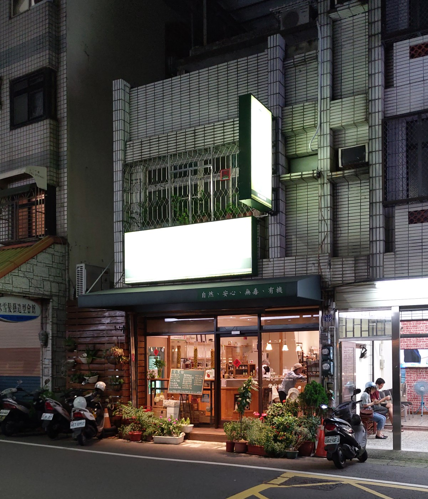
店內裝潢，蠻雅致的，感覺舒服。 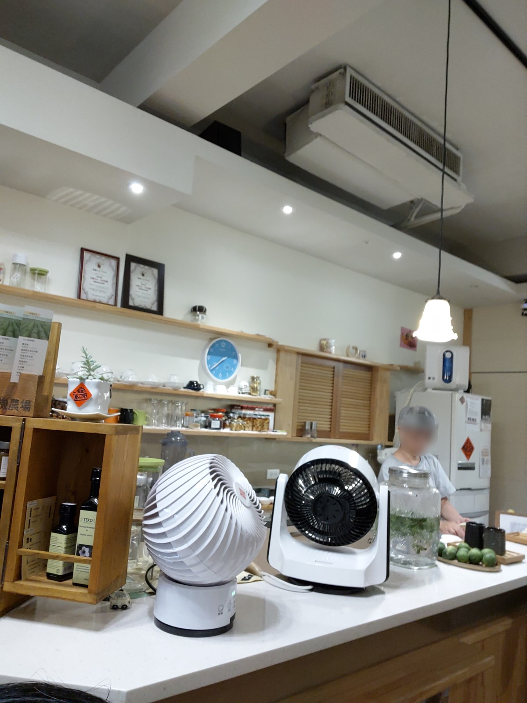
剛到時約晚上七點，幸運地坐到最後一桌，當時客滿。沒想到快用餐完畢時，客人陸陸續續離開，又幾乎快空了。 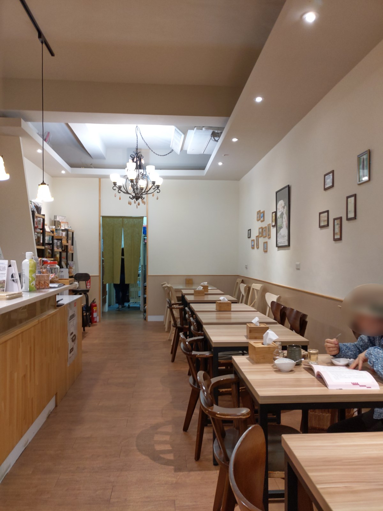
醞釀生活竹科店 Facebook 粉絲頁 其實有 完整菜單。 比較特殊的是，菜單上的 品項不是每天都有，要看當天能買到那些食材，然後會貼綠色貼紙，只能點有貼綠色貼紙的品項。 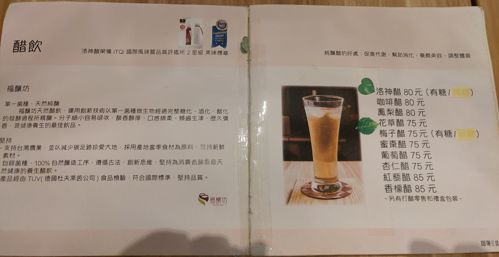 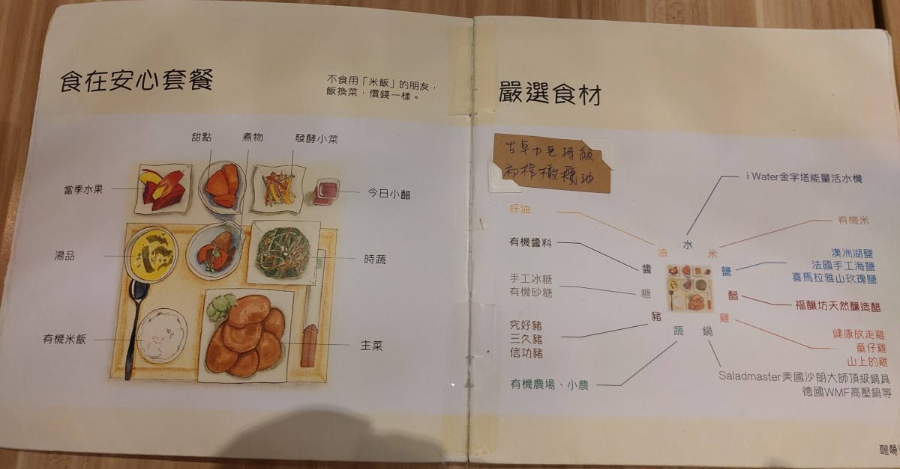 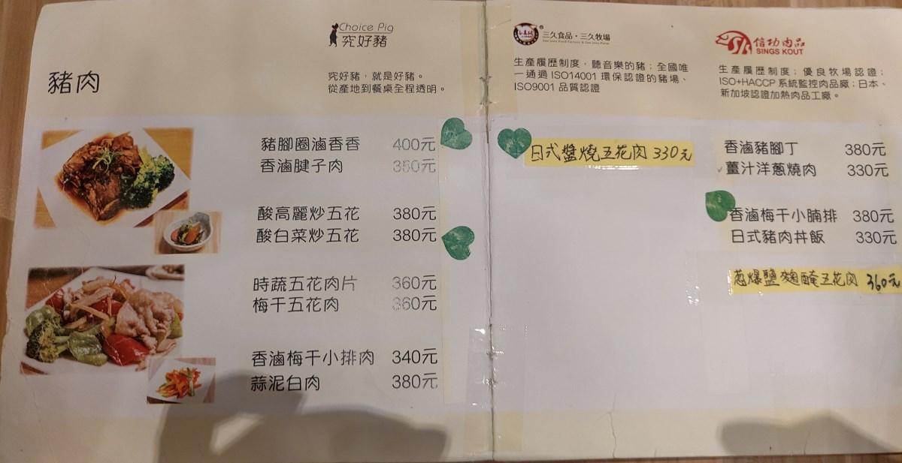 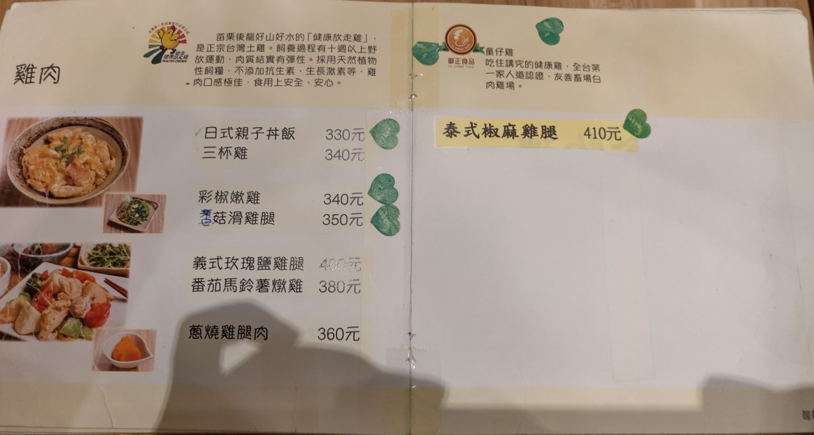 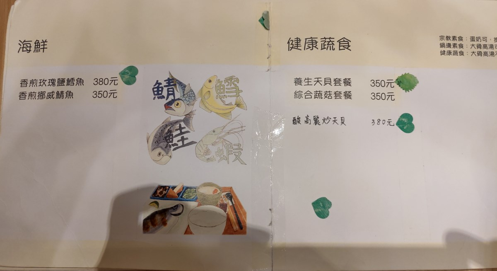 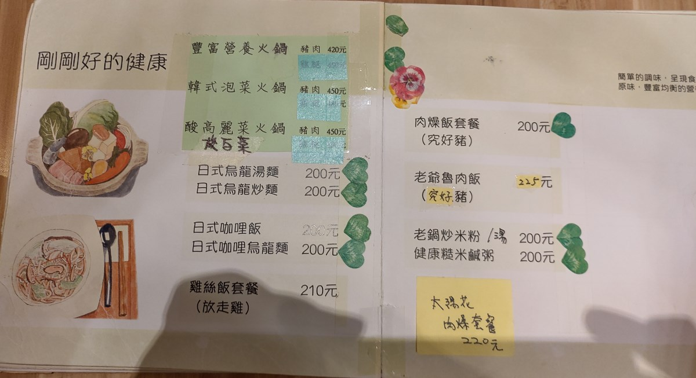 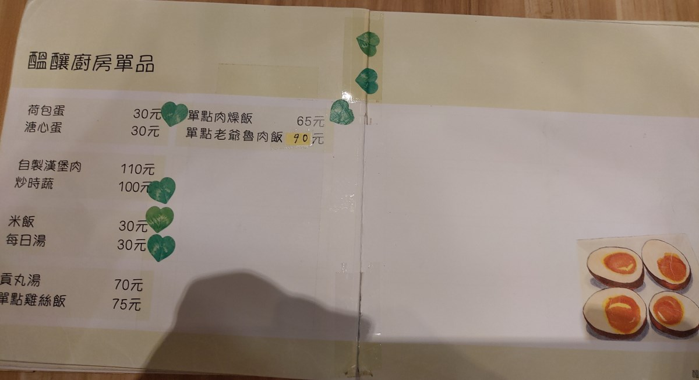 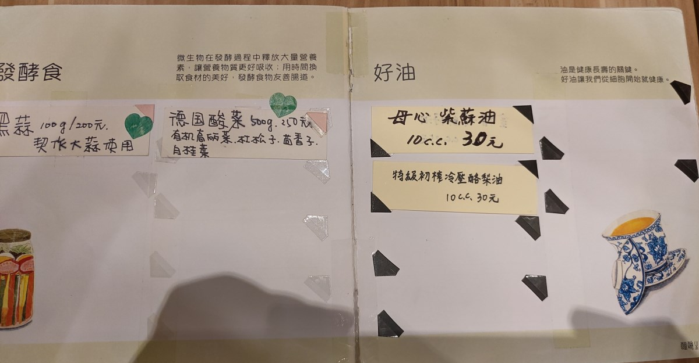 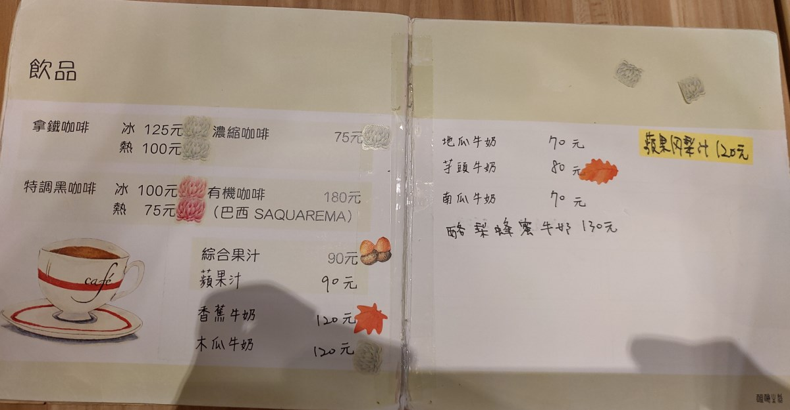 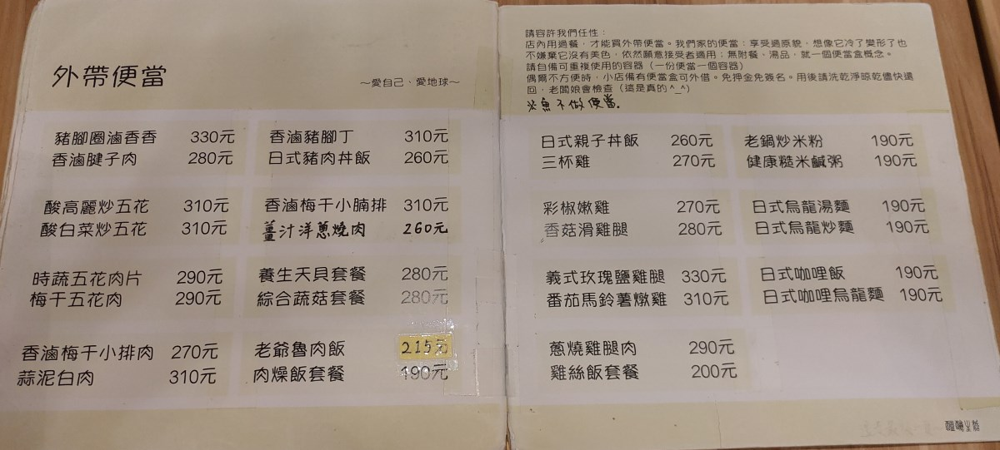
其實點完兩份餐，先送上兩杯醋，有再附一小罐水，讓你可以調整醋的濃度，忘了拍照了。 從官網或菜單都可以感覺到，這個醋是自己釀的，是它的強項。不過因為糖加的很少，沒想像中好喝，雖然很健康。
肉燥飯套餐，大概因為總店在台中，所以稱這圖片裏的食物為肉燥飯，另外有滷肉飯。 果然是健康導向，肉燥很不油，青菜算蠻多的，湯感覺熬了一定時間，但可能沒放鹽。 很用心煮，味道輕，整體不難吃。 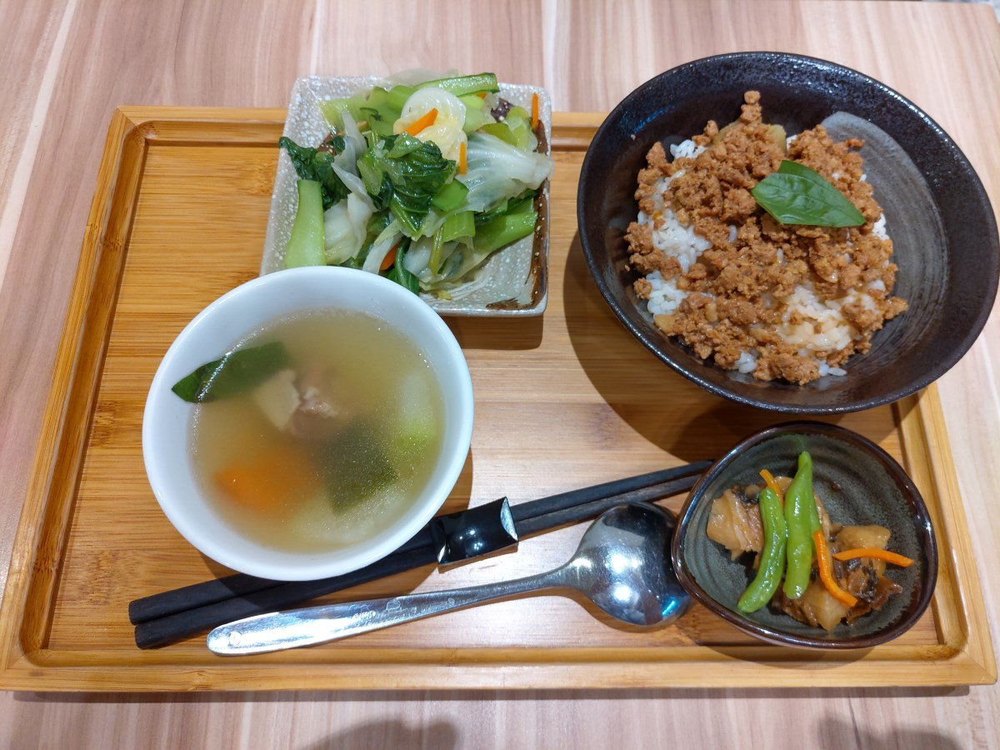
香煎玫瑰鹽鱈魚，差不多，魚沒下很重的鹽，也沒煎到微焦，去得到梅納反應。 一樣是用心煮，味道輕，整體不難吃。 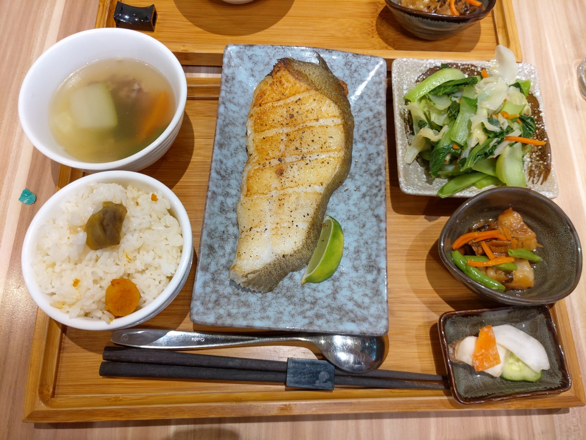
飯後甜點水果。 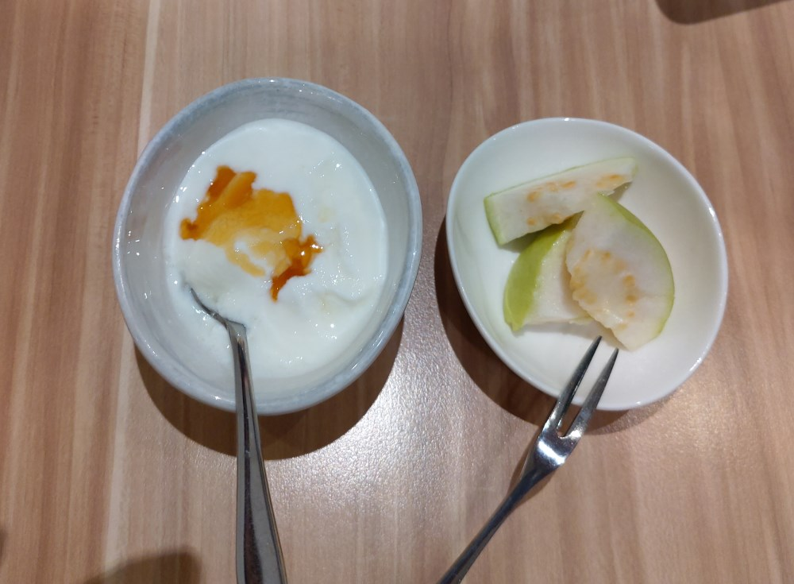
畢竟健康也是很重要，這間簡餐店在健康食物中的口味算是名列前茅， 我勉強可以一個月吃一次。
這家店旁邊巷子到底，同時也是長春路尾巴，有一個公有停車場， 走過來約 5 分鐘，算好停車。大家可以好好利用。